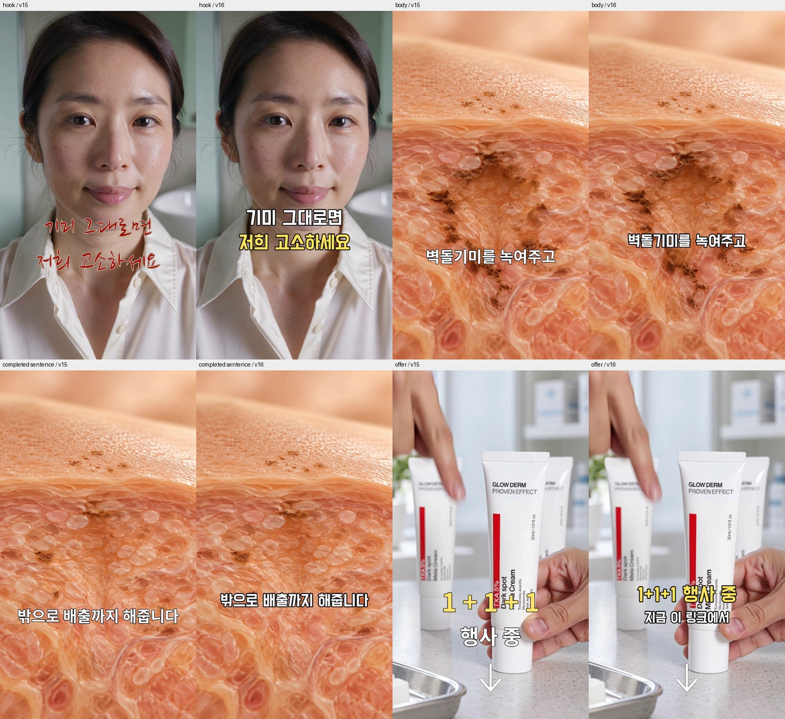

① 설명과 사용 모습을 함께 보여주기
- 볼 구간
- 먼저 0~8.88초를 보고, 이어서 전체를 보세요.
- 배울 점
- 말로 설명하는 내용과 화면 속 동작이 연결됩니다.
- 내 작업에 적용
- 자막을 읽는 동안 손·피부·제품도 보이는지 확인하세요.
대행사 CCFM의 편집 방식 참고용입니다. 이 파일만으로 매출 성과를 판단하지 않습니다.
우리는 고객이 피부 고민과 제품의 연결을 이해하도록 광고를 만듭니다. 오늘은 후킹이 다른 10초 영상 2편을 만듭니다. 후킹과 공통 몸통까지만 편집하고, 구매 안내(CTA)는 넣지 않습니다.
고객이 “내 고민에 맞는 제품이구나” 하고 이해하고, 제품을 더 알아보러 오게 만드는 일입니다. 멜라크림은 기미가 고민인 40~50대 여성에게, 클렌저는 피부 요철과 세안이 고민인 고객에게 설명합니다.
광고 기획의 기본 골격은 후킹 → 몸통 → 성분 설명 → CTA입니다. 후킹으로 멈추게 하고, 몸통에서 고민과 사용·변화 장면을 연결하고, 성분 설명으로 우리 제품을 선택할 이유를 전달한 뒤, CTA로 구매 행동을 안내합니다. 이 네 단계 안의 내용·강한 후킹 요소·시나리오는 2주마다 ACIS로 리프레시하거나 과거 장기 집행 소재에서 가져옵니다. 제품별 소구점과 한 번에 바꾸는 테스트 변수는 지시서에 함께 적습니다.
시나리오 원문은 콘텐츠기획팀 글로우덤 시나리오 시트에 계속 추가합니다. 이번 주 기획·제작·성과 보드에서 원문과 제작·업로드·리뷰·개선 작업을 연결해 봅니다. 첫날 J01은 10초 실습 두 편을 후킹과 몸통까지만 만드는 예외이며, CTA를 생략하는 것이 정식 광고의 기본형은 아닙니다.
지금 꾸준히 하는 일 — 글로우덤 광고 편집. 멜라크림·클렌저 광고를 만들고, 피드백과 광고 결과를 받아 다음 영상을 개선합니다.
예정된 추가 업무 — 김가연님 파워페이지 영상. 12월 초 김가연님 유튜브 영상이 공개되면, 그 콘텐츠를 바탕으로 파워페이지(콘텐츠를 배포하는 외부 계정)에 올릴 영상을 편집할 예정입니다. 지금 바로 시작하거나 매일 반복하는 업무는 아닙니다.
생길 수 있는 추가 업무 — 착한구두 파워페이지 영상. 착한구두 건도 파워페이지에 배포할 영상 편집을 맡을 수 있습니다. 아직 구체적인 일정이나 분량이 정해진 업무는 아닙니다.
추가 업무가 생기면 사용할 자료·만들 분량·제출 날짜를 별도로 안내하고, 진행 중인 작업과의 우선순위를 함께 정합니다.
어떤 차이가 고객 반응을 바꾸는지 비교하기 위해서입니다. 한 시나리오에서 한 변수만 바꾸고 나머지는 고정합니다. 오늘 J01은 시작 화면이 같고 상단 헤드라인만 다른 10초 영상 A/B 두 편입니다. 후킹은 0~3.6초, 몸통은 3.6~10초로 두 편 모두 같습니다. 최신 상세는 시트의 J01 탭을 따릅니다.
읽고 나면 자기 말로 설명해 보세요. 누구에게 어떤 제품을 설명하나요? 오늘 A/B에서 무엇만 바꾸나요? 몇 시까지 무엇을 제출하나요?
| 용어 | 쉬운 뜻 |
|---|---|
| 기획안·브리프 | 누구에게 무엇을 보여줄지 정한 작업 지시서 |
| 소스 | 편집에 가져다 쓰는 영상·사진·음원 파일 |
| 레퍼런스 | 화면 구성과 편집 방식을 배울 참고 영상 |
| 후킹 | 첫 부분에서 시선을 붙잡는 장면이나 문장 |
| A/B | 한 가지 차이를 둔 영상 두 버전 |
| CTA | “제품 구성 확인하기”처럼 다음 행동을 안내하는 문구 |
| KPI | 일을 얼마나 잘 진행했는지 확인할 업무 목표 |
| CTR | 광고를 본 횟수 대비 링크를 클릭한 횟수의 비율 |
| ROAS | 광고비 대비 광고 매출 비율. 이익률은 아닙니다. |
예를 들어 광고비 1만 원으로 광고 매출 2만 원이 잡히면 ROAS는 200%입니다. 원가·배송비 등의 비용을 뺀 이익을 뜻하지 않습니다.
11/2 17시 초안 · 4:5 1080×1350 · 30fps · 각 10초. 신규 광고 실적 집계 제외.
정식 광고는 후킹 → 몸통 → 성분 설명 → CTA입니다. 첫날은 후킹·몸통만 연습합니다.
지시 정본: 시트 J01 탭. 후킹 화면은 같고 상단 헤드라인만 바꿉니다.
| A | B |
|---|---|
| 2주 만에 / 기미 삭제? | 하루 천 원으로 / 기미 관리하세요 |
후킹 0~3.6초는 비포 → 도포 → 변화. 몸통 3.6~10초는 제형 → 약국 매대 → 제품입니다. 패드로 닦는 장면은 이번 실습에서 쓰지 않습니다. 음악·폰트는 편집자 선택이며 두 편에서 같게 사용합니다. 오늘은 CTA를 넣지 않습니다.
준비 파일: 동작 영상, 약국 매대, 제품 사진. 음악·폰트 사용 내역을 기록합니다.
제출: A/B MP4 두 편 + 캡컷 프로젝트 + 사용 소스 목록 + 제작 메모. 메모에 더 강한 후킹과 이유, 추가 아이디어 1개, 작업시간과 막힌 점을 적습니다.
2026-11-02 11:00 개정(강한 B/A 후킹) · 1차본 17시 · 4:5 1080×1350 · 30fps · 각 10.0초 · CTA 없음
이 영상의 목적은 첫 3초에 손가락을 멈추게 하는 것이다. 편집하기 전에 "기미가 고민인 40~50대 여성이 스크롤하다 멈추려면 첫 화면에 무엇이 보여야 하나"를 먼저 정한다. 헤드라인 A/B는 아래에 정해져 있지만, 비포 컷의 크기·기미가 사라지는 타이밍·디졸브 길이·헤드라인이 뜨는 순간은 "가장 세게 보이는 쪽"으로 편집자가 결정한다.
제작 메모에 반드시 적을 것: ① A/B 중 어느 후킹이 더 강하다고 보는지와 이유 한 줄 ② 본인이 생각하는 더 강한 후킹 문구·장면 1개 제안.
| 구간 | 화면 |
|---|---|
| 0.0~1.2 | 볼에 흰 크림 한 덩이 올라간 접사 |
| 1.2~3.4 | 장갑 손가락으로 펴 바르는 동작 |
| 3.4~4.2 | 얇게 펴진 흰 제형 |
| 4.2~5.2 | 패드로 닦아내는 동작 |
| 5.2~6.0 | 닦아낸 뒤 피부 (생성 잔여 변화로 색소가 옅어 보임) |
| 시간 | 화면 | 하단 자막 |
|---|---|---|
| 0.0~0.6 | 소스 0.0~0.6 기미 가득한 볼에 크림 한 덩이(비포). 1배속 | 없음 |
| 0.6~2.8 | 소스 1.2~3.4 손가락으로 펴 바르는 동작. 1배속 | 없음 |
| 2.8~3.6 | 소스 5.2~6.0 기미 사라진 피부(애프터). 1배속 | 없음 |
| 편 | 상단 헤드라인 (후킹 구간 고정) |
|---|---|
| A | 2주 만에 / 기미 삭제? |
| B | 하루 천 원으로 / 기미 관리하세요 |
노란 강조: A는 "기미 삭제?", B는 "천 원". 질문형 A는 물음표까지 한 줄.
| 시간 | 화면 | 상단 헤드라인 | 하단 자막 |
|---|---|---|---|
| 3.6~4.4 | 소스 3.4~4.2 얇게 펴진 흰 제형 접사 | 트라넥삼산 5% / 글로우덤 멜라크림 | 얇게 펴 바르는 제형 |
| 4.4~7.2 | assets/product_shelf.jpg 매대 실사. 100%→108% 천천히 줌인 | 동일 | 트라넥삼산 5% |
| 7.2~10.0 | assets/product.jpg 제품 단독 실사. 100%→108% 천천히 줌인 | 동일 | 글로우덤 멜라크림 (제품명만, CTA 없음) |
컷 전환은 0.2초 디졸브. 후킹에서 이미 사라진 기미 뒤에 다시 기미 있는 장면(소스 0~3.4)을 붙이지 않는다.
멜라크림_후킹몸통_10초_A_261102.mp4 · 멜라크림_후킹몸통_10초_B_261102.mp4 + 캡컷 프로젝트 + 사용 소스 목록 + 제작 메모
예시는 ‘어느 부분을 어떻게 편집할지’를 배우기 위해 봅니다. 각 예시의 볼 구간과 배울 점을 확인하고, 편집 참고 자료와 실제 광고 성과가 확인된 자료를 구분해 읽어주세요.
대행사 CCFM의 편집 방식 참고용입니다. 이 파일만으로 매출 성과를 판단하지 않습니다.
후킹만 담긴 과거 검토본(S17)입니다. 화면의 “AI 연출” 표시는 새 영상에 넣지 마세요. 과거 B 검토본도 보기
반려된 과거 영상(S18)입니다. 최신 제작 지시는 별도 상세 기준을 따릅니다.
기존 광고 05의 원본입니다. 예비 작업 B02·B03에서 사용합니다.
큰 글자를 많이 넣기보다, 제목 → 설명 → 구매 안내 순서로 읽히게 만드세요. 설명 자막은 뜻이 이어지는 구절로 묶고, 제품과 손동작을 가리지 않게 놓습니다.

관심을 끌었다고 꼭 구매까지 이어지는 것은 아닙니다. 먼저 초반에 계속 보는지, 다음으로 제품 링크를 누르는지, 마지막으로 구매하는지를 함께 봅니다. 광고 운영과 결과 판단은 제현님이 담당하고, 편집자는 다음 수정에 반영합니다.
아래는 10/29 저장 자료입니다. 같은 조건의 실험 결과가 아니므로 영상 순위를 단정하지 않습니다.
| 광고 | 지출 | 구매 | 매출 | ROAS | 후킹률 표시값 |
|---|---|---|---|---|---|
| 05 | 463,345원 | 9 | 374,100원 | 80.7% | 20% |
| 01 | 36,744원 | 0 | 0원 | 0.0% | 33% |
| N06 | 46,389원 | 0 | 0원 | 0.0% | 49% |
저장 자료 기준 2026-10-29T22:38:14+09:00. 동일 조건 무작위 실험이 아니며 노출량·집행 기간이 다르다. 후킹률은 대시보드 표시값, ROAS는 매출÷지출로 재계산. N06은 노출467·구매0이라 전체 고객의 무효과로 일반화하지 않는다. 후킹률이 구매를 보장하지 않는다는 교육 예시다. 실시간 계정 상태로 읽지 않는다.
성과가 좋은 예시·편집 문법 예시·반려 예시를 구분한다. 아래 파일은 패키지에 함께 들어 있다. 새 직원이 다른 PC로 옮겨도 재생할 수 있다.
assets/ccfm_care.mp4 — 0~8.88초의 시연과 설명 연결, 약10~14.1초의 성분 CG, 본문의 고정 위치와 흰색/노란색 역할을 관찰한다. 전체 영상을 보고 단순히 초반만 빠르게 따라하지 않는다. 영상별 매출을 이 파일만으로 증명하는 예시는 아니다.
질문: 어떤 동작을 보여주면서 어떤 문장을 말하는가? 자막이 제품·시연과 경쟁하는가? 본문·제목·혜택은 어떻게 구분하는가?
assets/ccfm_mother.mp4, assets/ccfm_sale.mp4. 어머님은 짧은 본문이 안정된 영역에 놓이는 방식을, 판매종료는 도입 인물과 설명 몸통의 연결을 본다. 인물 경력·효능·가격·판매종료 문구 자체를 우리 광고에 옮기지 않는다.
assets/comparison.jpg, assets/care_sheet.jpg. 과거 v15의 지나친 글자 크기·서체·강조색 혼용과 짧은 토막 자막을 비교한다. v16에서 정리한 정보 위계와 의미 단위 묶음을 참고한다. “폰트가 설치됨”은 “읽기 좋은 자막”과 다르다.
assets/S18_rejected_v1.mp4. 반려 이력에서 사용자가 좋다고 한 비포애프터 소스와, 반려한 부자연스러운 내레이션·장면 나열을 분리해서 본다. ‘이번엔 다른 분의 볼’, ‘거울 앞에서 피부 확인’ 같은 장면 안내로 구매 이유를 대신하지 않는다. 자동 전사·디코딩 검사 통과가 음성 자연스러움이나 최종 컨펌을 뜻하지 않는다. 최신 S18 대본은 별도 JSON에 있다.
assets/S17_A_v3_review.mp4, B. 두 영상은 5.6초짜리 후킹 참고 자료다. 사용 동작과 첫 문구로 시선을 끄는 방식을 관찰한다. 오늘 만들 10초 영상에는 이 후킹 뒤로 제품 설명을 담은 공통 몸통을 따로 구성한다. 과거 검토본에 보이는 작업 라벨은 새 영상에 넣지 않는다.
assets/own05_master.mp4와 아래 스냅샷을 본다. 초반 제품컷 이후 얼굴로 넘어가는 지점과 작은 상단 고정문구가 예비B02/B03의 변경 대상이다. 과거 문구·제품 배치를 관찰하는 자료이며 현재 모든 광고의 정답이 아니다.
지속 업무인 글로우덤 광고 편집의 제작 목표는 하루 1개 시나리오로 A/B 총 2편입니다. 정상적인 주 5일 기준으로는 10편입니다. 파워페이지 편집은 별도로 배정하는 추가 업무이며, 매일 정해진 추가 물량이 있는 것은 아닙니다.
업무를 돌아볼 때는 제작 편수·제출 시간·오류 없는 완성도·수정 의견 반영을 함께 확인합니다. 오탈자, 잘린 자막, 잘못된 제품 정보가 없는지 제출 전에 확인하세요.
이번 온보딩 일정은 첫 3일 17시 초안, 이후 정상 운영은 15시 초안·18시 수정본을 기준으로 잡았습니다. 첫 3일의 수정 마감은 제현님과 확인합니다.
첫날 실습과 기존 영상의 수정본(v2·v3)은 신규 편수로 세지 않습니다. 소스나 기획을 기다린 시간은 따로 기록합니다. 매출과 광고비 대비 매출 비율(ROAS)은 다음 편집에 참고할 광고 성과이며, 개인에게 확정된 평가 목표가 아닙니다.
전달받은 지시서 확인 → A/B 편집 → 제출·작업시간과 막힌 점 기록 → 받은 의견 반영 순서입니다. 파일이 없거나 열리지 않으면 제현님에게 알려주세요. 금요일에는 한 주의 작업과 어려웠던 점을 함께 봅니다.
기록은 영상을 전달할 때 제작 메모 3~4줄로 함께 남기면 됩니다. A/B에서 바꾼 점, 작업에 걸린 시간, 기다린 자료나 막힌 점, 수정할 점을 적습니다. 별도 작업기록 파일을 채우는 절차는 두지 않습니다.
이번 주 제작 목표는 총 6편으로 확정했습니다(11/3 기준).
| 날짜 | 제작 목표 |
|---|---|
| 11/3 화 | 시나리오 12로 A/B 2편 |
| 11/4 수 | 클렌저 시나리오 1개로 A/B 2편 |
| 11/6 금 | 멜라크림 1편 + 클렌저 1편 |
11/2 실습 2편과 수정본은 위 6편에 더하지 않습니다. 11/5는 검수·수정·업로드 준비 배정안이며, 세부 시각과 소스 준비는 담당자가 조율합니다. 제작 목표와 실제 납품·검수·집행 상태는 따로 기록합니다.
| 기간 | 집중할 일 |
|---|---|
| 1주차 · 11/2~6 | 실습 이후 화 2편·수 2편·금 2편, 총 6편을 제작합니다. 첫 3일 걸린 시간을 기록합니다. |
| 2~3주차 · 11/9~20 | 하루 2편 목표로 작업하며, 반복되는 오류와 수정 시간을 줄입니다. |
| 4주차 · 11/23~27 | 만든 영상과 광고 결과를 함께 돌아보고 다음 달 목표를 정합니다. |
두 업무 모두 매일 반복하는 업무로 정해진 것은 아닙니다. 배정 시 제현님이 진행 중인 작업과의 우선순위·일정을 조정합니다.
2026-11-02~11-06 · 기획·집행·리뷰: 제현 / 편집·수정: 편집자
11/3 사용자 확정: 이번 주 제작 목표 총 6편. 11/3 시나리오 12로 2편 → 11/4 클렌저 시나리오 1개로 2편 → 11/6 크림 1편 + 클렌저 1편.
제작 수량·날짜는 확정 목표이며 실제 납품·검수·집행 완료 기록이 아니다. 11/5 검수·수정·업로드 준비와 세부 시각은 운영 배정안이다. 시나리오 원문은 사용자 지정 시트가 정본이다. S18이라는 옛 내부 명칭으로 시트의 시나리오 12를 중복 배정하지 않는다.
| 날짜 | 작업 | 납기 목표 | 다음 단계 |
|---|---|---|---|
| 2026-11-02 | 멜라크림 10초 후킹 실습 | 17시 초안 | 실습 결과를 보고 후킹 선택 이유와 더 강한 후킹 아이디어 1개를 기록한다. |
| 2026-11-03 | 시나리오 12 · A/B 2편 제작 | 2편 제작 · 17시 초안 목표 | 11/3 시나리오 12의 A/B 2편을 제작해 납품하고, 수정 의견을 모아 11/5 검수·수정·업로드 준비로 연결한다. |
| 2026-11-04 | 클렌저 시나리오 1개 · A/B 2편 제작 | 2편 제작 · 17시 초안 목표 | 같은 클렌저 시나리오에서 변수 하나만 다른 2편을 납품한다. 11/5 검수·수정을 거쳐 11/6 클렌저 1편 제작으로 연결한다. |
| 2026-11-05 | 크림·클렌저 제작본 검수·수정·업로드 준비 | 15시 검수 · 18시 수정본 목표 | 확정본 링크·광고 ID·실제 집행일을 연결하고 11/6 크림·클렌저 각 1편 제작에 반영할 수정점을 정리한다. |
| 2026-11-06 | 금요일 멜라크림 1편 제작 | 1편 제작 · 15시 초안·18시 수정본 목표 | 멜라크림 완성본 1편을 납품하고 검수·업로드·후속 리뷰로 연결한다. 성과 표본이 부족해도 제작 목표를 리뷰 업무만으로 대체하지 않는다. |
| 2026-11-06 | 금요일 클렌저 1편 제작 | 1편 제작 · 15시 초안·18시 수정본 목표 | 클렌저 완성본 1편을 납품한다. 크림 1편과 함께 검수하고 주간 리뷰 결과를 11/9 큐와 11/16 ACIS 검토에 반영한다. |
이번 주는 위의 총 6편 제작 목표를 따른다. 11/2 J01 실습 2편과 기존 작업의 수정본은 6편에 더하지 않는다. 금요일은 제품별 1편씩 총 2편이다. 클렌저와 금요일의 구체적인 시나리오는 지정 시트에서 확정한다.
업로드 예정은 검수 후 다음 영업일을 기본으로 잡되, 실제 집행일은 광고 ID와 노출 확인 후 기록한다. 3일·6일 리뷰는 그 실제 집행일을 기준으로 한다. 금요일은 크림·클렌저 제작과 주간 리뷰를 함께 진행한다. 성과 표본이 부족하면 승패 판단을 보류하고 제작 목표는 유지한다.
11/9~20은 하루 2편 목표로 반복 오류와 수정 시간을 줄인다. 11/23~27에는 제작 이력과 성과를 연결해 다음 달 목표를 정한다. ACIS 기획 검토는 11/16·11/30이다.
김가연 파워페이지는 12월 초 예정 추가 업무. 착한구두 파워페이지는 가능 추가 업무. 자료·물량·납기는 별도 배정하며 정기 생산량에 자동 추가하지 않는다.
예비 작업은 다음 광고의 소스가 준비되지 않았을 때 이어서 할 수 있는 작업입니다. 직원이 순서를 임의로 고르지 않고, 제현님이 배정한 지시서로 진행합니다.
입사 전 기획·소스가 막히는 날의 대체 큐다. 이번 요청으로 준비한 신규 편집안이며 과거 확정 시나리오로 표기하지 않는다. 제현이 당일 슬롯 하나를 배정한다. 하루 두 편 총량 안에서 진행하며, 세 건을 동시에 추가하지 않는다. 각 작업은 같은 몸통에 하나의 변수만 바꾸는 A/B다.
목적: 첫 화면에서 고민 부위가 더 잘 읽히는 확대 정도를 비교한다. J01 다음으로 권장한다.
소스: action_pigment_v3.mp4, product_shelf.jpg, original_bgm.wav. 규격은 J01과 같은 4:5 1080×1350·30fps·10초다. J01 A를 기준으로 후킹 확대 정도만 바꾸고, 문구와 몸통은 동일하게 유지한다. 구매 안내(CTA)는 넣지 않는다.
| 구간 | A | B | 고정 |
|---|---|---|---|
| 후킹 구간 | J01 피부 화면 대비108% 확대 | J01 피부 화면 대비120% 확대 | 같은 볼 중심점·같은 원본 시간·같은 문구 |
| 후킹 이후~10초 | J01 공통 몸통 | 같은 몸통 | 제품 사진·음원·자막 동일 |
확대 대상은 피부 레이어만이다. 제품·문구까지 전체 화면을 확대하지 않는다. 손과 패드가 잘리면 확대값을 임의로 낮춰 납품하지 말고 캡처로 문의한다. 변경값을 메모에 기록한다. 가설 검증용이며 120%가 더 좋다고 미리 판정하지 않는다.
납품: 세로_멜라크림_초반접사108_A_v1_M<날짜>.mp4, 세로_멜라크림_초반접사120_B_v1_M<날짜>.mp4. 두 편 모두 새 편집 버전이다.
목적: 제품 단독 도입의 초기 이탈을 줄일 수 있는지 확인한다. 05의 오디오·상단 문구·1.33초 이후 몸통은 그대로 둔다.
소스: assets/own05_master.mp4와 assets/action_pigment_v3.mp4. 05 실제 원본은720×1280·24fps·43.833초의9:16이다. 출력은4:5 1080×1350·24fps로 새 프로젝트를 만든다. 원본 전체를4:5로 늘리거나 강제 크롭하지 않는다. 먼저 아래 공통 재배치를 두 안에 똑같이 적용한다. 새 음성·장면 생성 없음.
공통 레이아웃: 상단180px 검은 띠에 원본 두 줄 문구를 다시 배치, 중앙 y180~1150에 원본의 주영상 영역(원본 y254~1054)을 비율 유지 fit, 하단 y1150~1350에 원본 하단 자막 영역(y1054~1140)을 비율 유지 fit. 원본 상단 문구는 B03에 적힌 원문을 사용한다. 중앙 여백은 검정이며 피부·제품을 잘라 채우지 않는다. 몸통 각 컷에 필요한 정보가 이 영역 밖으로 벗어나면 캡처로 문의한다. 이 공통4:5판을 만든 뒤 A/B의 첫 구간만 바꾼다. 새4:5 A/B끼리 비교하며 과거9:16과의 차이를 순수 후킹 효과로 해석하지 않는다.
| 구간 | A | B | 고정 |
|---|---|---|---|
| 0~1.33초 | S17 동작0~1.33초의 피부 접사를 05 피부 영역에 사용 | 동일 원본·동일 시간, 피부 레이어만115% 확대 | 상·하단 고정문구·05 원음·길이 |
| 1.33초~끝 | 05 원본 | 같은 원본 | 원음·장면·제품·CTA·속도 |
첫 구간만 공통4:5판의 중앙 주영상 영역을 교체하고 상·하단 텍스트는 유지한다. 완성 MP4의 피부 위 글자를 지우거나 가짜 깨끗한 배경을 만들지 않는다. 원본으로 분리 편집이 어려우면 요청 사항을 기록하고 B01/B03으로 전환한다. 1.33초 경계는24fps 타임라인의32프레임(약1.333초)에 맞추고 양옆을 확인한다. 전체 내레이션 흐름은 바꾸지 않는다.
납품: 세로_멜라크림_05얼굴도입_A_v1_M<날짜>.mp4, B. 기존 05 원본은 비교용이며 새 생산 편수로 다시 세지 않는다.
목적: 작은 고정문구의 읽힘을 개선하는 안을 비교한다. 05 내용·시연·원음·길이·CTA는 유지하고 상단 헤드라인 크기만 바꾼다.
소스: assets/own05_master.mp4, 패키지 폰트. 05 원본 전체 길이43.833초·24fps를 유지한다. 규격4:5 1080×1350. 먼저 B02에 명시한 공통4:5 레이아웃을 만들고 두 안에서 동일하게 사용한다. 피부·제품·하단 자막을 임의 크롭하지 않는다.
A: 새4:5 상단 검은 띠180px 안에 Do Hyeon52px. B: 같은 폰트·두줄·중앙 정렬·글자색으로60px. 줄 중심 y55/125, 노란색#ffe65b, 좌우40px 여백은 동일하다. 두 안 모두 원문 ‘10년동안 안없어진 기미 / 2주동안 발랐더니 없어졌습니다.’를 그대로 사용한다. 새 보증·효과·행사 수치를 추가하지 않는다. 이 문구의 결과 검증을 새로 주장하는 작업이 아니다.
기존 글자를 덮을 때는 상단 검은 띠 안에서만 처리하고 피부·제품 화면을 침범하지 않는다. 가장 긴 줄이 넘치면 임의 축소하지 않고 제현에게 두 안의 캡처로 문의한다. 같은 문구·같은 위치를 유지해 크기 변수만 비교한다.
납품: 세로_멜라크림_05헤드라인52_A_v1_M<날짜>.mp4, 세로_멜라크림_05헤드라인60_B_v1_M<날짜>.mp4. 전체 재생과 모바일 크기 읽힘을 확인한다. 위 두 편은 구9:16과 비교하는 실험이 아니라 새4:5 안에서 글자 크기를 비교하는 실험이다.
시나리오 원문은 사용자 지정 시트가 정본이다. 현재 시나리오 12와 영상 캡처 탭을 우선 사용한다. 과거 S18 사본은 이력이며 현재 배정의 원문으로 혼용하지 않는다.
시어머님 S20 v3와 클렌저 C03 v5는 이미 제작된 기존 광고다. 운영 보드에서 저장된 광고 상태·성과와 다음 개선 후보를 확인한다. 예전 ‘크림20·클렌저03 새 장면·음성 미제작’ 문구는 현재 상태를 나타내지 않는다. ‘엄마 사진’ 구안과 ‘시어머님 썰’ 완성본은 다른 시나리오다.
김가연님 유튜브가 2026년 12월 초 공개될 때 파워페이지에 배포할 영상을 만드는 업무가 예정되어 있다. 착한구두 건으로도 파워페이지 편집 업무가 생길 수 있다. 두 업무의 일정·분량·납기는 각각 별도로 배정하며, 현재 매일 만드는 광고 물량에 자동으로 추가하지 않는다. 준비된 기획안은 참고 자료이며, 원본을 받았다는 이유만으로 바로 작업을 시작하지 않는다.
직원 이름·이메일과 계정·폴더 권한은 아직 확인되지 않았습니다. 권한 준비와 전달 채널 안내는 관리자가 마무리할 항목입니다.